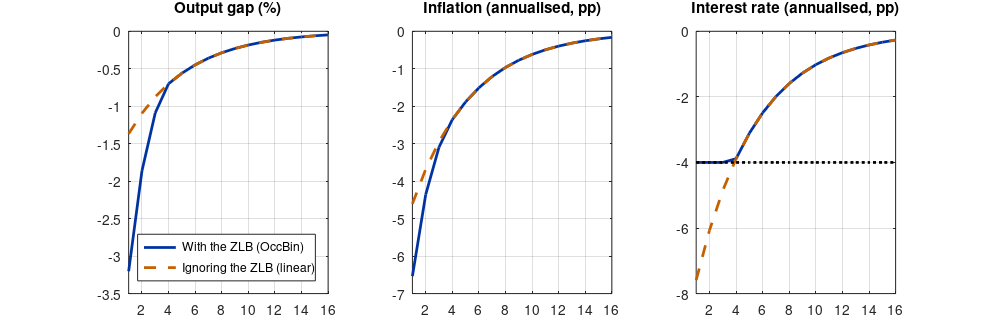

Step 1The question and the model
How much deeper is a recession when the central bank cannot cut the interest rate below zero? Between 2008 and 2015, and again in 2020, policy rates in many economies sat at or near zero, and a central question of macroeconomics became how the zero lower bound (ZLB) changes the effects of shocks.
The model is the three-equation New Keynesian model of the NK guide, with one change: the interest rate follows the Taylor rule only when the rule prescribes a rate above the bound.
Variables are deviations from the steady state, so the bound is \(\underline{i} = -i^*\), minus the steady-state nominal rate. With a 2% annual real rate and a 2% inflation target, \(i^* = 4\%\) a year, 1% a quarter.
How OccBin works
OccBin treats the model as two linear models, one for each regime: the Taylor rule (constraint slack) and \(i_t = \underline{i}\) (constraint binding). For a given path of shocks it guesses in which periods the constraint binds, solves the model backwards through time with the right regime in each period, checks whether the guess is consistent (the constraint binds exactly when the shadow rate is below the bound), and iterates until it is. The solution is nonlinear globally but piecewise linear, and expectations take into account that the economy will leave the ZLB later.
Step 2Write the model in Dynare
// New Keynesian model with the zero lower bound, solved with OccBin. Quarterly percent deviations.
@#ifndef ILB
@#define ILB = -1.0
@#endif
var x pi i rn inot;
varexo e_rn;
parameters beta sigma kappa phi_pi phi_x rho_rn ilb;
beta = 0.995; sigma = 1; kappa = 0.1717; phi_pi = 1.5; phi_x = 0.125; rho_rn = 0.8;
ilb = @{ILB}; // the bound: minus the steady-state nominal rate (1% a quarter)
model;
x = x(+1) - (1/sigma) * (i - pi(+1) - rn); // IS curve
pi = beta * pi(+1) + kappa * x; // Phillips curve
inot = phi_pi * pi + phi_x * x; // the rate the Taylor rule prescribes (the shadow rate)
[name = 'policy', relax = 'zlb']
i = inot; // regime 1: the rule applies
[name = 'policy', bind = 'zlb']
i = ilb; // regime 2: the rate is stuck at the bound
rn = rho_rn * rn(-1) + e_rn; // natural-rate (demand) shock
end;
occbin_constraints;
name 'zlb'; bind inot <= ilb; relax inot > ilb;
end;
steady;
check;
shocks(surprise);
var e_rn; periods 1; values -1.25; // a fall in the natural rate of 5 percentage points (annualised)
end;
occbin_setup;
occbin_solver(simul_periods = 40);dynare zlb
STEADY-STATE RESULTS:
x 0
pi 0
i 0
rn 0
inot 0
EIGENVALUES:
Modulus Real Imaginary
0.8 0.8 0
1.179 1.151 0.253
1.179 1.151 -0.253
There are 2 eigenvalue(s) larger than 1 in modulus for 2 forward-looking variable(s)
The rank condition is verified.How to read it
- Two versions of the policy equation, tagged with the same
nameand withrelaxandbind, tell Dynare which equation holds in which regime. occbin_constraintsstates when the constraint binds and when it is relaxed, in terms of model variables. Using the shadow rateinotmakes the condition transparent.shocks(surprise)defines the shock path for the simulation: an unexpected fall in the natural rate in period 1.occbin_solvercomputes the piecewise-linear solution and, for comparison, the linear solution that ignores the bound.- The
checkoutput confirms that the model is determinate in the regime where the Taylor rule applies.
Step 3Compare the OccBin and the linear solution
P = oo_.occbin.simul.piecewise; L = oo_.occbin.simul.linear;
names = cellstr(M_.endo_names); id = @(v) find(strcmp(names, v));
T = 16; t = 1:T; ilb = M_.params(strcmp(cellstr(M_.param_names), 'ilb'));
f = figure('position', [0 0 900 300]);
vv = {'x', 'pi', 'i'}; tt = {'Output gap (%)', 'Inflation (annualised, pp)', 'Interest rate (annualised, pp)'}; sc = [1 4 4];
for j = 1:3
subplot(1, 3, j); plot(t, sc(j)*P(t, id(vv{j}))); hold on; plot(t, sc(j)*L(t, id(vv{j})), '--');
if j == 3, plot(t, sc(j)*ilb*ones(size(t)), 'k:'); end
title(tt{j}); grid on; xlim([1 T]);
if j == 1, legend('With the ZLB (OccBin)', 'Ignoring the ZLB (linear)', 'location', 'southeast'); end
end
print(f, '-dpng', '-r110', 'zlb.png');
nb = sum(P(:, id('i')) <= ilb + 1e-8);
fprintf('Quarters at the ZLB: %d\n', nb);
fprintf('Trough of the output gap: OccBin %.2f%%, linear %.2f%% (amplification x%.1f)\n', min(P(:, id('x'))), min(L(:, id('x'))), min(P(:, id('x')))/min(L(:, id('x'))));
fprintf('Trough of annual inflation: OccBin %.2f pp, linear %.2f pp\n', 4*min(P(:, id('pi'))), 4*min(L(:, id('pi'))));
fprintf('Lowest interest rate (annualised): OccBin %.2f pp, linear %.2f pp\n', 4*min(P(:, id('i'))), 4*min(L(:, id('i'))));Quarters at the ZLB: 3 Trough of the output gap: OccBin -3.20%, linear -1.37% (amplification x2.3) Trough of annual inflation: OccBin -6.53 pp, linear -4.60 pp Lowest interest rate (annualised): OccBin -4.00 pp, linear -7.59 pp

How to read it
- The linear solution lets the interest rate fall below the bound, by about 3.6 percentage points (annualised) beyond the steady-state rate of 4%, so it implies a negative nominal rate.
- With the ZLB, the rate stays at the bound for a few quarters. The real interest rate rises as inflation falls, the opposite of what the economy needs, so the output gap and inflation fall much further than in the linear solution.
- Expectations matter. Households and firms know the rate will be stuck for a while, which lowers expected inflation and raises the expected real rate even before the bound binds: the amplification comes partly from the future.
- This is why the ZLB is a nonlinearity a linear model cannot approximate: the size of a recession depends on whether the constraint binds.
Step 4Policy question: does a higher inflation target help?
fprintf('%-28s %10s %14s %16s\n', 'Inflation target (annual)', 'ZLB qtrs', 'trough x (%)', 'trough pi (pp)');
for target = [1 2 3 4]
b = -(2 + target) / 4; % bound = -(real rate + target), quarterly
clear functions; evalc(sprintf('dynare zlb noclearall nograph nolog console -DILB=%g', b));
P2 = oo_.occbin.simul.piecewise;
fprintf('%-28s %10d %14.2f %16.2f\n', sprintf('%d%%', target), sum(P2(:, id('i')) <= b + 1e-8), min(P2(:, id('x'))), 4*min(P2(:, id('pi'))));
endInflation target (annual) ZLB qtrs trough x (%) trough pi (pp) 1% 5 -4.70 -8.77 2% 3 -3.20 -6.53 3% 2 -2.33 -5.45 4% 2 -1.79 -4.90
How to read it
A higher inflation target raises the steady-state nominal rate and so gives the central bank more room to cut before reaching zero. The same shock then produces a shorter spell at the bound and a milder recession: with a 4% target instead of 2%, the trough of the output gap is about 45% shallower. This is the argument of Blanchard, Dell'Ariccia and Mauro (2010) for raising inflation targets. The model leaves out the costs of higher steady-state inflation (price dispersion, relative-price distortions), which a welfare analysis must add before drawing a policy conclusion.
Step 5Write the paper
How to write it: results
We solve the model with the occasionally binding zero lower bound using the OccBin algorithm of Guerrieri and Iacoviello (2015), as implemented in Dynare. Following a large adverse shock to the natural rate of interest, the policy rate reaches the bound and remains there for several quarters. Relative to a linear solution that ignores the bound, the fall in the output gap is more than twice as large and the fall in inflation substantially deeper, because the real interest rate rises as inflation falls. A higher inflation target shortens the spell at the bound and attenuates the recession.
Common mistakes
- Simulating a ZLB episode with a linear model and truncating the interest rate afterwards: expectations are then wrong.
- Writing the bound in levels when the model is in deviations (or the reverse). The bound in deviations is minus the steady-state rate.
- Forgetting that OccBin is a perfect-foresight solution conditional on the shock path: agents do not take into account the probability of future ZLB episodes. Global methods do, at a much higher computational cost.
- Estimating a model on ZLB-era data with a linear filter. Dynare's OccBin also provides a piecewise Kalman filter for estimation.